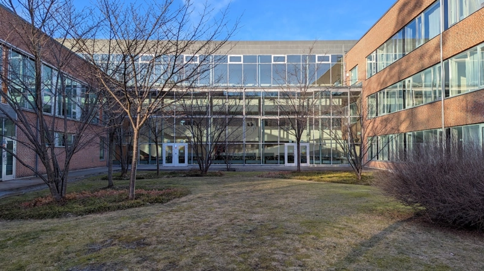

Artikel

Löken avslöjar: Lärare skvallrar om elever under lunchen
Under de senaste veckorna har Löken lyssnat av samtalen på ett antal lärarbord och Löken kan nu avslöja vad lärare pratar om under dessa samtalsstunder. Vad är det egentligen lärare pratar om som får dem att skratta så mycket?
Östras elever har spekulerat om vad lärarna pratar om under lunchen sedan skolan grundades. Många elever har åskådat tystnaden som följer efter att en elev går förbi ett lärarbord. "Det är som om de pratar om oss", säger en av eleverna Löken pratade med. "Eller snarare våra betyg", inflikar en annan elev. Redan 2009 försökte ett antal tvåor lyssna på vad lärarna pratade om genom att sätta sig vid bordet intill, men lärarna insåg vad som försiggick och pratade om helt vanliga saker. Löken pratade också med två elever som 2015 försökte vira sig ner på vajrar från taket för att lyssna på vad lärarna pratade om, men även då insåg lärarna vad som hände och pratade åter om reguljära ämnen.
Genom att borra tunnlar under skolan har mikrofoner kunnat placeras ut på rälsar under matsalen. Dessa sätts sedan i en superposition då all personal lämnar de underjordiska tunnlarna och genom att sedan se var lärarna befinner sig kan Löken tvinga mikrofonerna att kollapsa på precis de platserna som finns under lärarna. Sedan extraheras datan från mikrofoner till en superdator som kan återskapa konversationen med 90 % säkerhet. Sist matas all den här datan in i en egenskapad LLM som Löken har utvecklat för att sammanfatta vad konversationerna handlade om.
Med datan sammanställd kan man tydligt se vad lärarna pratar om, men den största delen av tiden lärare spenderar med varandra under lunchen sitter de faktiskt i tystnad. Ibland förekommer det att lärarna mimar lite så att elever som tittar dit inte blir misstänksamma. Om man bara räknar tiden lärarna konverserar så spenderas den största portionen av tiden på att håna elever, och inte bara de som det har gått dåligt för på proven. Enligt Lökens undersökning spenderar lärare minst lika mycket tid på att prata skit om elever som fick A eller B förra terminen som på elever som fick D eller E förra terminen. Ofta sker det att lärare bara nämner en elevs namn och hela bordet brister ut i skratt. Löken frågade skolans ledning om de stod bakom vad lärarna sa på rasten och fick till svar: "Östra gymnasiet bör vara en inkluderande plats där ingen elev diskrimineras mer än någon annan".